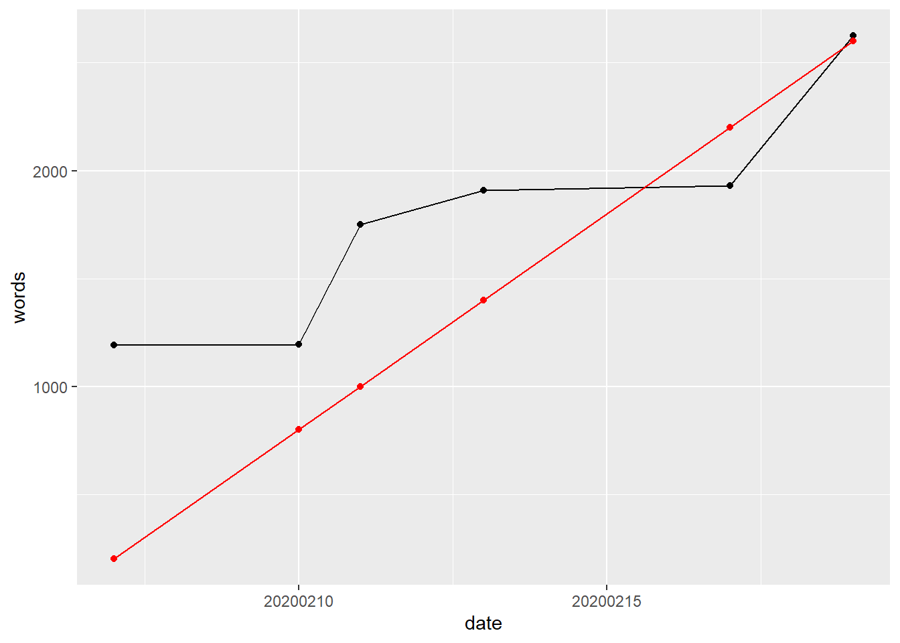

Lipids and dementia
An investigation of their relationship
Abstract
Background
In the UK, an estimated 800000 people are currently living with dementia and this number is expected to double
by 2040. Despite the number of dementia cases and decades of research, there remains much unknown about
the pathogenesis and progression of the disease, and, at present, no effective treatment exists to arrest or
reverse the cognitive decline associated with the condition. In this context, identification of causal relationships
between modifiable targets and dementia risk is central to the development of evidence-based prevention
strategies and will be critically important in maintaining the long-term health of the ageing public. Blood lipid
levels have been implicated in the aetiology of dementia by genetic linkage and functional cell biology studies,
but current epidemiological evidence has yet to reach a consensus on their role in dementia risk.
Preface
Word count: 2625 words
Change since last day: 695 words
Days: 13 days
Words per day: 200.9230769
